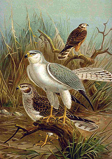
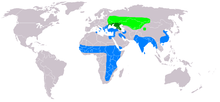

| Pallid Harrier | |
|---|---|
|  | |
| Conservation status | |
| Binomial name | |
| Circus macrourus S. G. Gmelin, 1770 |
|
|  | |
Summer Resident Winter |
The Pale or Pallid Harrier (Circus macrourus) is a migratory bird of prey of the harrier family. It breeds in southern parts of eastern Europe and central Asia and winters mainly in India and southeast Asia. It is a very rare vagrant to Great Britain and western Europe, although remarkably a juvenile wintered in Norfolk in the winter of 2002/3.
This medium-sized raptor breeds on open plains, bogs and heathland. In winter it is a bird of open country.
This is a typical harrier, with long wings held in a shallow V in its low flight. It also resembles other harriers in having distinct male and female plumages.
The male is whitish grey above and white below, with narrow black wingtips. It differs from the Hen Harrier in its smaller size, narrower wings, pale colour different wing tip pattern.
The female is brown above with white upper tail coverts, hence females and the similar juveniles are often called "ringtails". Her underparts are buff streaked with brown. It is best distinguished from the female Hen Harrier on structure. It is very similar to the female Montagu's Harrier, but has darker and more uniform secondaries from below.
Pallid Harriers hunt small mammals, lizards and birds, surprising them as they drift low over fields and moors.
The nest of this species is on the ground. Four to six whitish eggs are laid.
{kind=link}
{kind=link}